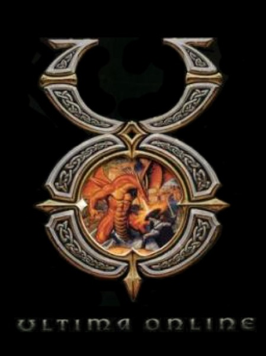

RPG · 1997
Ultima Online
A persistent world with player thieves, years before anyone budgeted for that.

Cover: Wikipedia: Ultima Online
Facts
- Released
- 1997-09-24
- Genre
- MMORPG
- Category
- RPG
- Platforms
- PC
- Developers
- Origin Systems
- Publishers
- Electronic Arts